В рамках нашей компании мы провели опрос по сотрудникам (а так же друзьям и знакомым) из разных стран:
«Используете ли вы VPN и как часто?»
«Если да, для чего вы используете VPN?»
«Каким функционалом вы пользуетесь?»
У меня не осталось конкретных результатов этого опроса, но тезисно ответы были следующие: Из более чем 150 опрошенных 90% так или иначе использовали VPN. Частота использования была разной, но самый популярный ответ был «редко, для того, чтобы зайти на заблокированный ресурс». Исходя из прочих ответов, было понятно, что большая часть опрошенных просто нажимала кнопку Connect.
Это соответствовало ресерчу конкурентов — в большинстве случаев главное окно программы выглядело довольно просто, а платный функционал скрывался либо за самой кнопкой (т.е не было бесплатной версии или это была trial-версия), либо за дополнительными платными серверами.
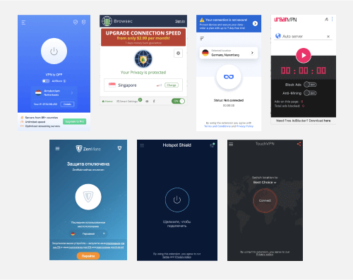
Дизайн приложения
В рамках этого проекта я нарисовал основной экран приложения, как наиболее ключевой, исходя из ресерча. Была подготовлена стилистика программы, эскизы, анимации и финальный вариант главного экрана.
Дальнейшее развитие приложения, отрисовка дополнительных экранов приложения (настройки и прочее) были переданы другому дизайнеру для оптимизации нагрузки.
Дополнительным удобством такого лейаута является то, что дизайн легко адаптировать для любой платформы.
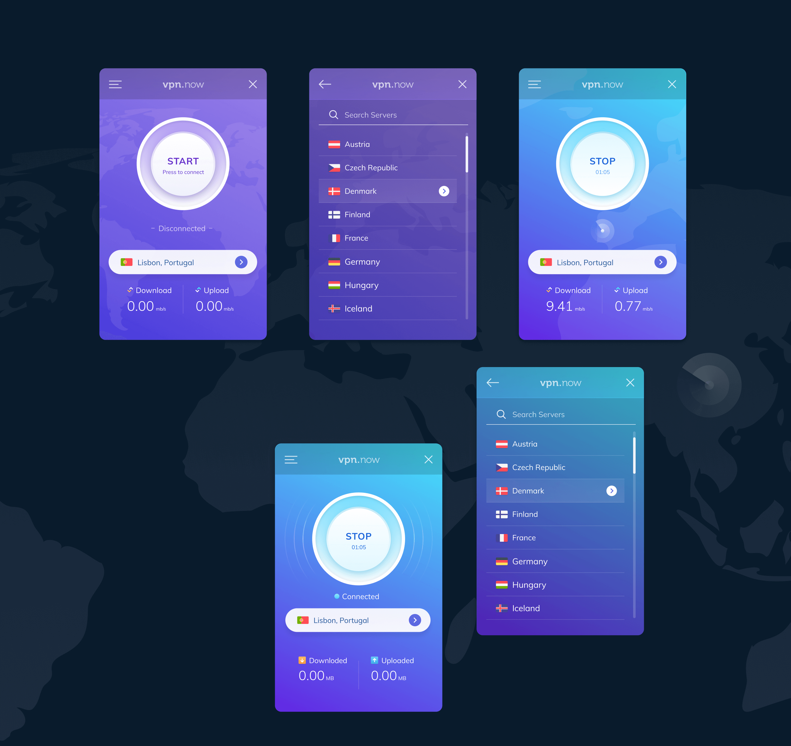
Дополнительный ресерч
Исходя из опроса, мы поняли, что для большого количества юзеров достаточно бесплатного доступа к единственному серверу, который сможет открыть доступ к заблокированному ресурсу.Поэтому мы провели дополнительный ресерч в сети (тренды, конкуренты), чтобы найти другие боли пользователей. Это решило бы две задачи:
Сфокусироваться на пользователях, которым нужны специфические требования и функции.
Обратить внимание пользователей на те функции, от которых они не задумывались до этого.
В итоге мы выявили прочие нужды пользователей VPN, а так же нашли некоторые инсайты:
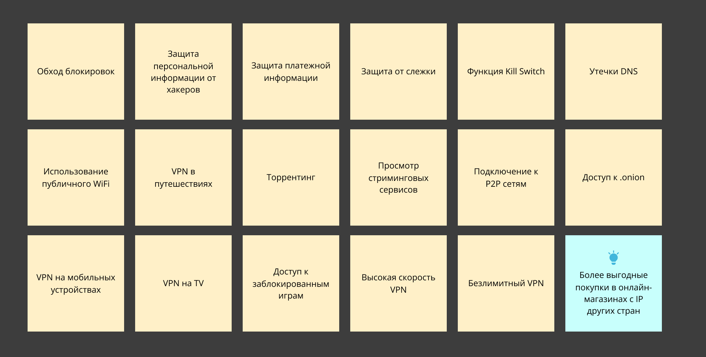
Дизайн вебсайта
При дизайне вебсайта, при подаче материала мы решили сконцентрироваться на тех болях пользователей, которые нашли в ходе исследования выше. Мы так же старались подать материал таким образом, чтобы пользователи, которые не думали об этом ранее, задумались о преимуществах и дополнительных возможностях, помимо базового сценария использования VPN.По стилистике мы решили отталкиваться от приложения, подготовив так же красочные иллюстрации для упрощения считываемости контента.
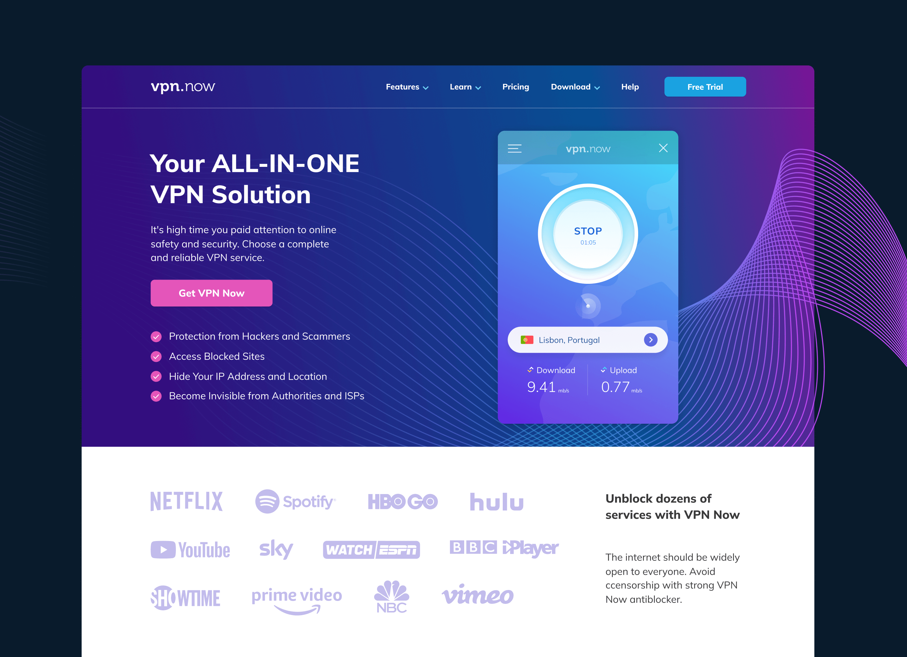
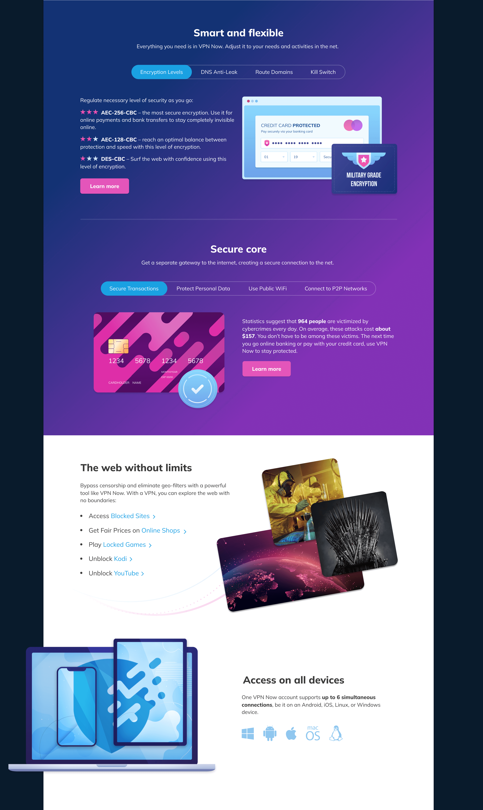
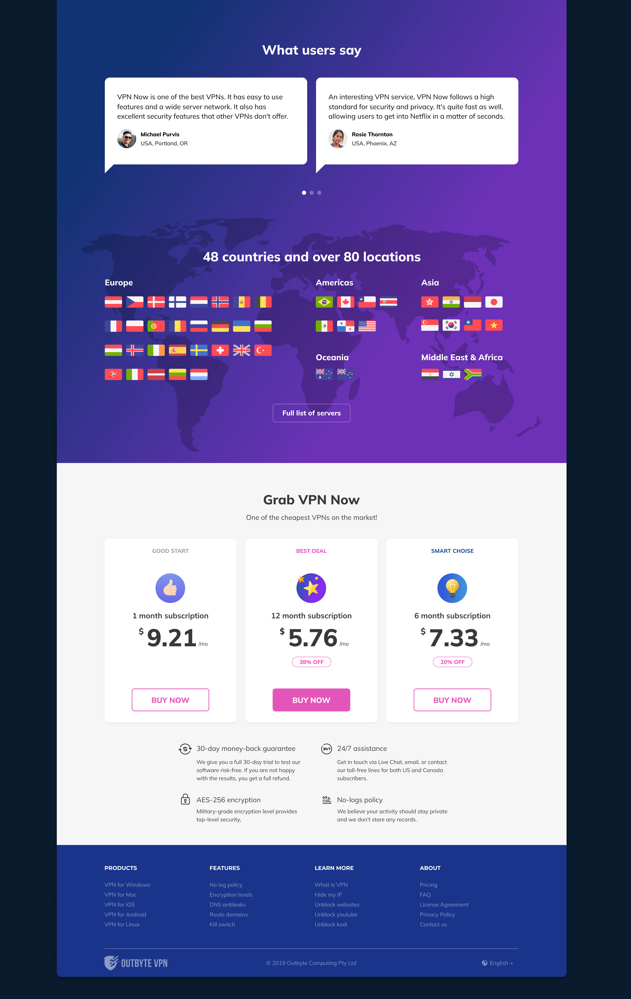
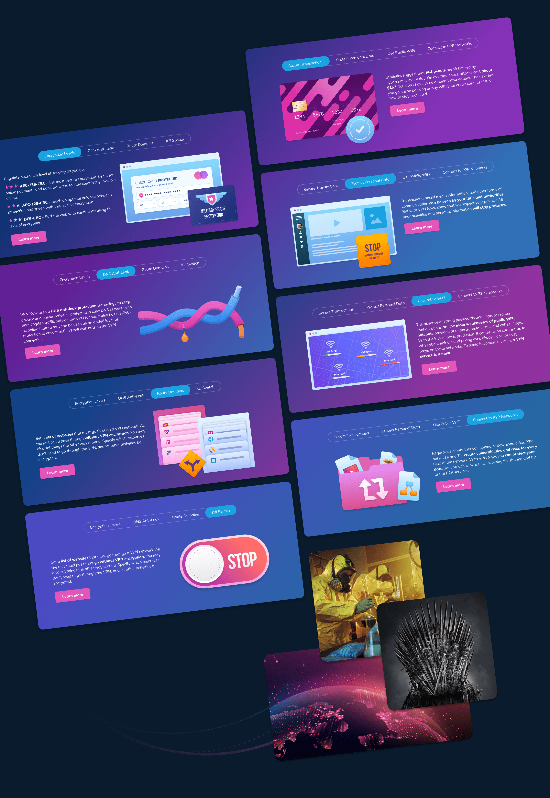
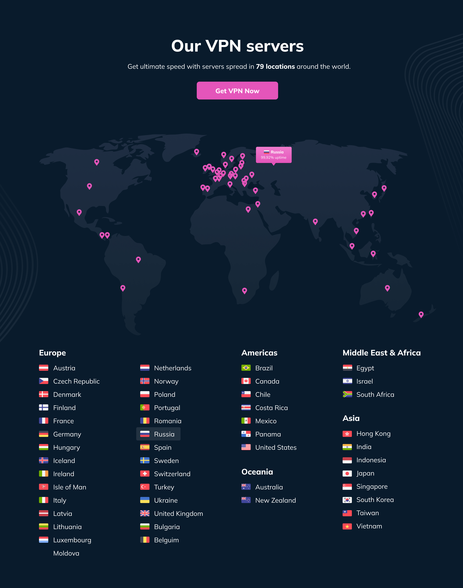
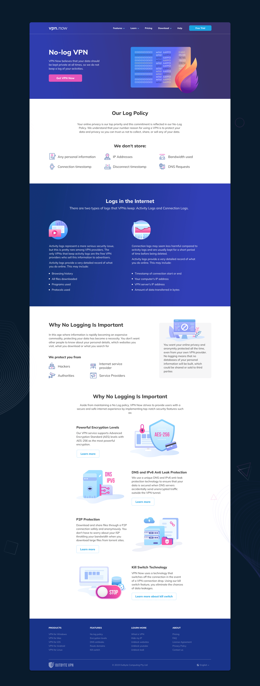
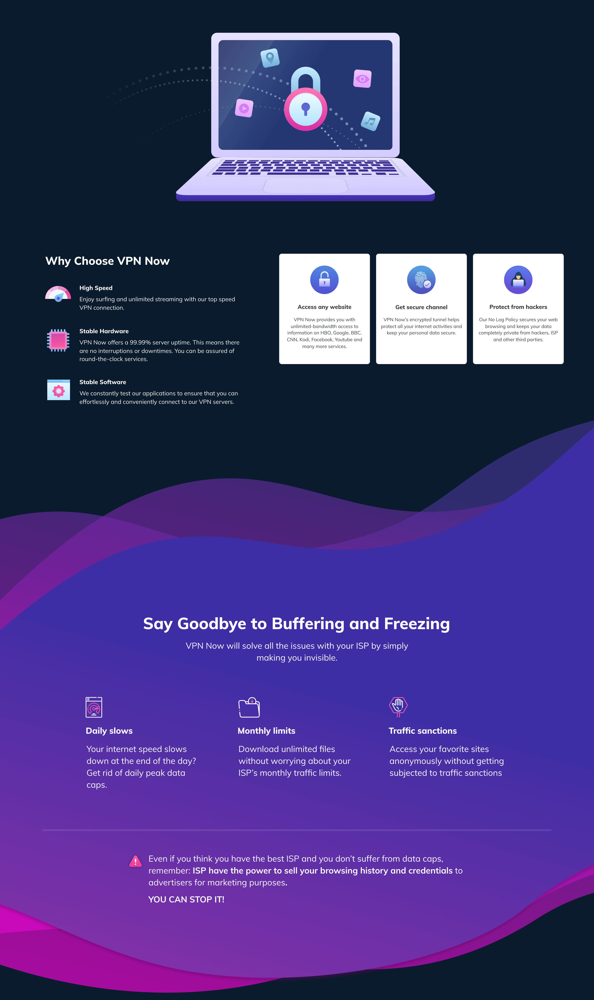
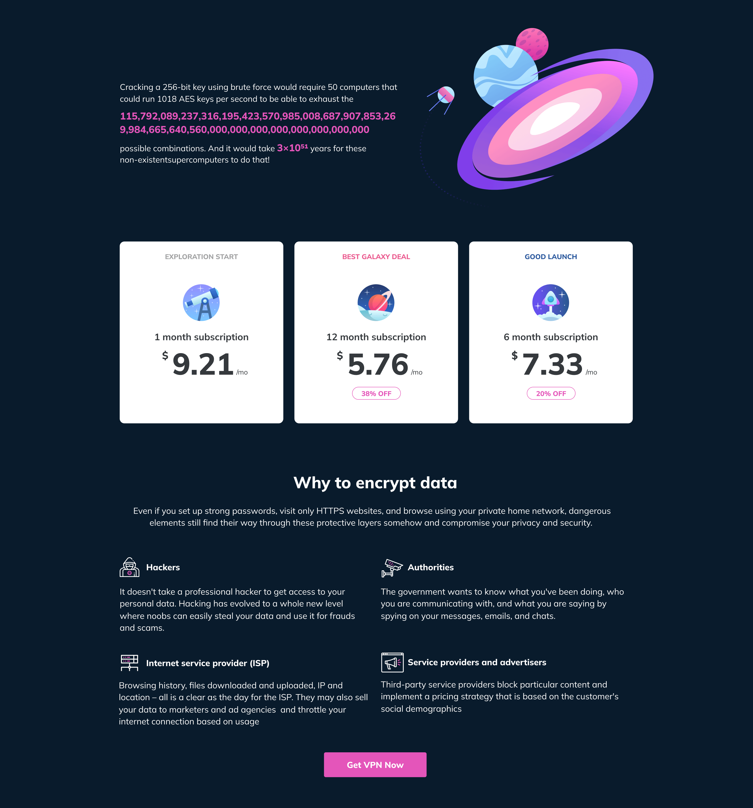
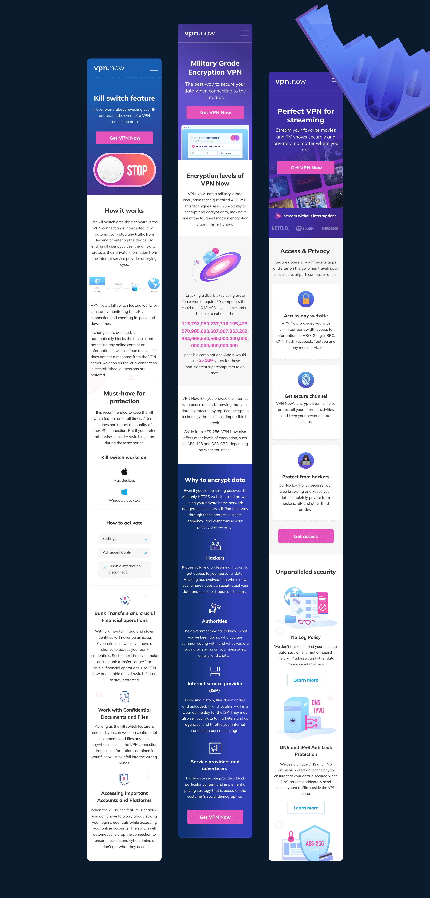
Результаты
Веб-сайт неплохо показал себя при запуске таргетированной рекламы, так же он неплохо индексировался за счет большого количества текста. Анализ тепловой карты и поведения пользователей указывал на то, что наши гипотезы оказались верными — люди читали текстовые блоки и проходили по внутренним ссылкам, изучая информацию, а так же на то, что CTA-элементы были верно расставлены.